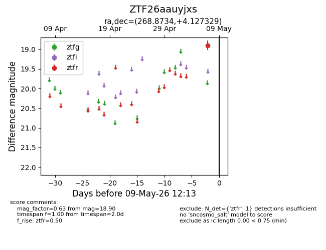
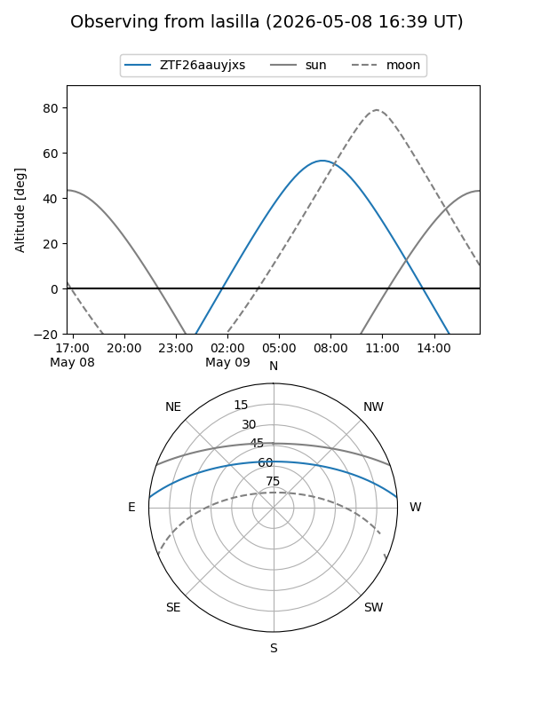
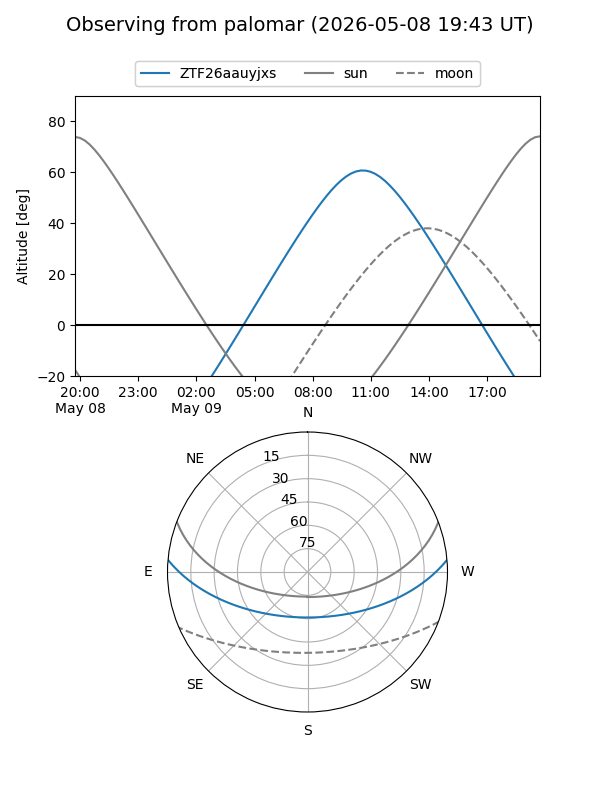

ZTF26aauyjxs
Target ZTF26aauyjxs at 2026-05-09 12:14
Aliases and brokers:
FINK: link
Lasair: link
ALeRCE: link
alt names
ZTF26aauyjxs (ztf,fink_ztf)
Coordinates:
equatorial (ra, dec) = 268.8734,+4.12733
equatorial (HMS+DMS) = 17:55:29.63,+04:07:38.39
galactic (l, b) = (30.2188,+14.32122)
Flags:
Photometry:
last ztfr=18.90
1 ztfr detections
Lightcurve

Visibility


Additional plots